Cigar Review: Hoyo de Monterrey - Le Hoyo de Rio Seco
This is a cigar that I unfortunately did not enjoy. It's probably not an issue with the cigar, but more of my beginner user mistakes. 😢
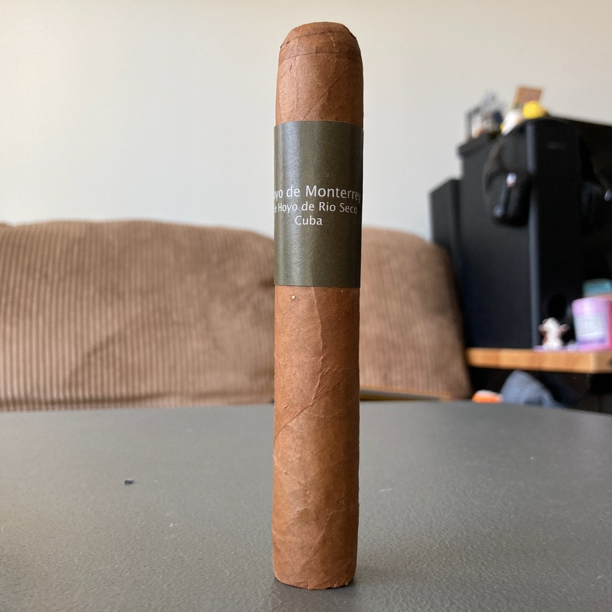
I will start by saying the draw was good for me. Not too tight and not too loose. I was also able to get a little bit of flavours at the start. I tasted some nuttiness. A little bit of woody notes and cedar. No sweetness at all come to mind. But other than a few initial puffs, the rest was bitter sharp spices. Pretty much taste like burned wood all the way. It is just very different from what other reviewers described this cigar.
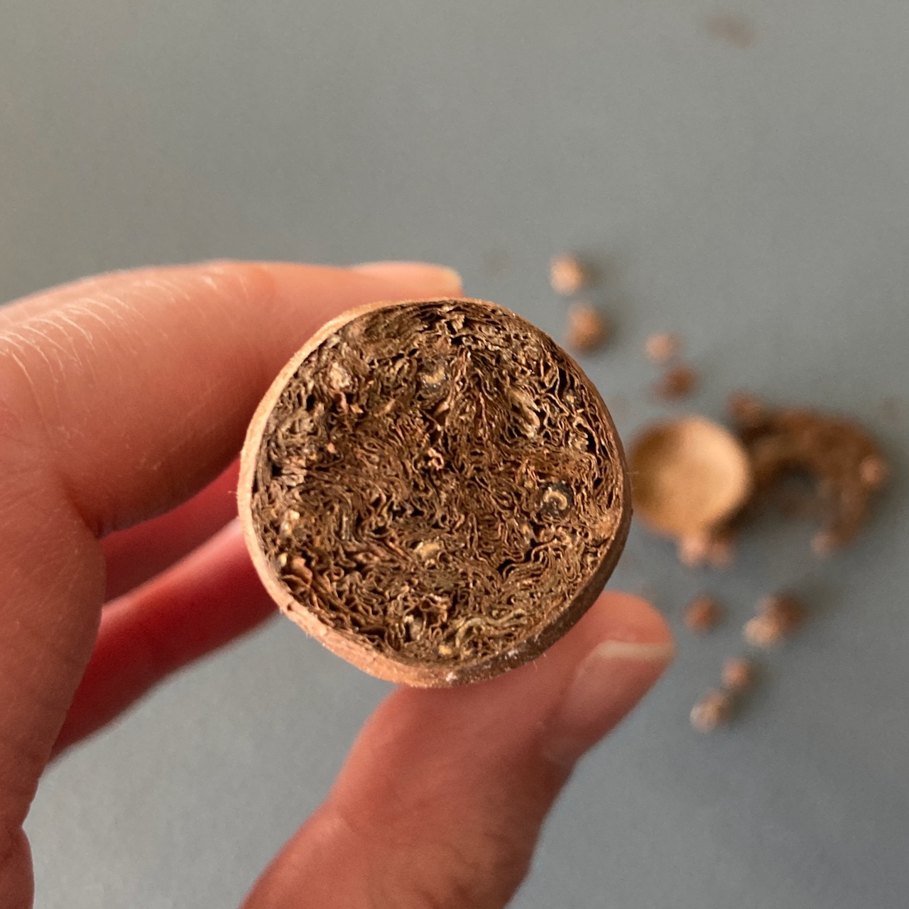 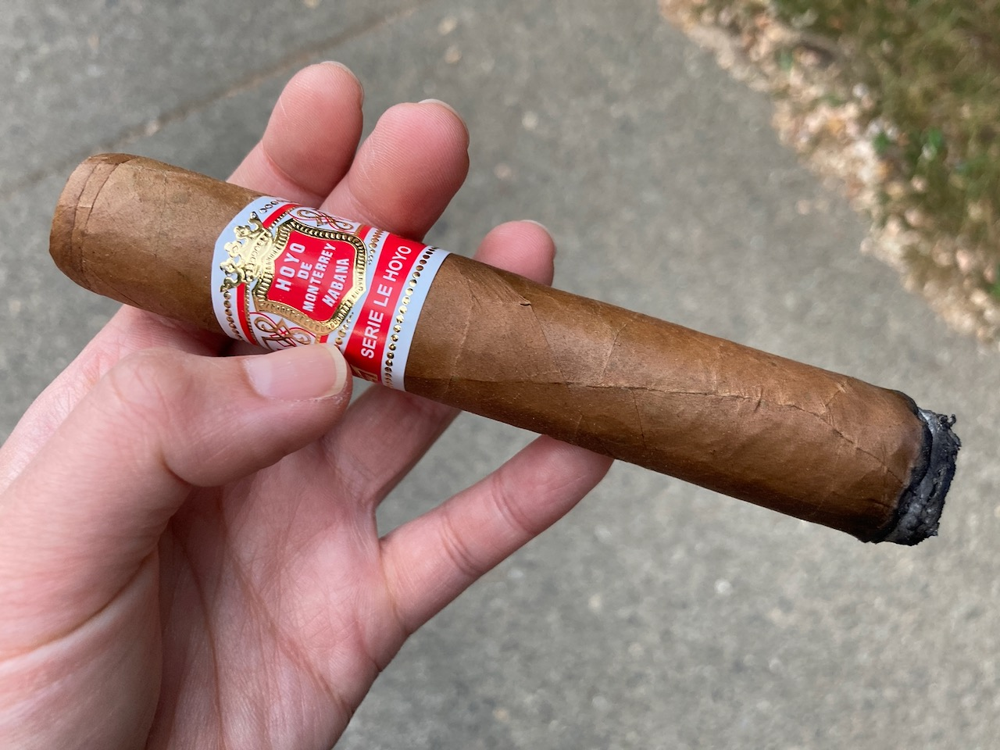 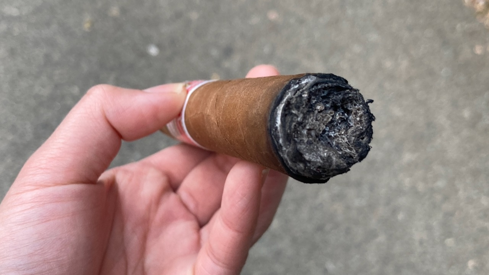
This is a premium cigar at a price of about CDN$50. However, as you can see from the ash, it's pretty much just black tar throughout. I was actually walking around a busy neighbourhood on that day. It could be that I was too conscious about my surrounding that I just didn't toast the cigar enough. Maybe that is why it tasted like burnt wood to me. I was probably just tasting all that tar.
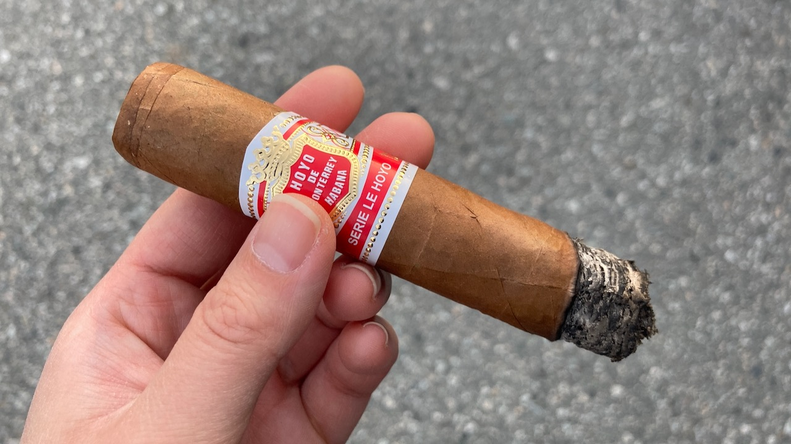 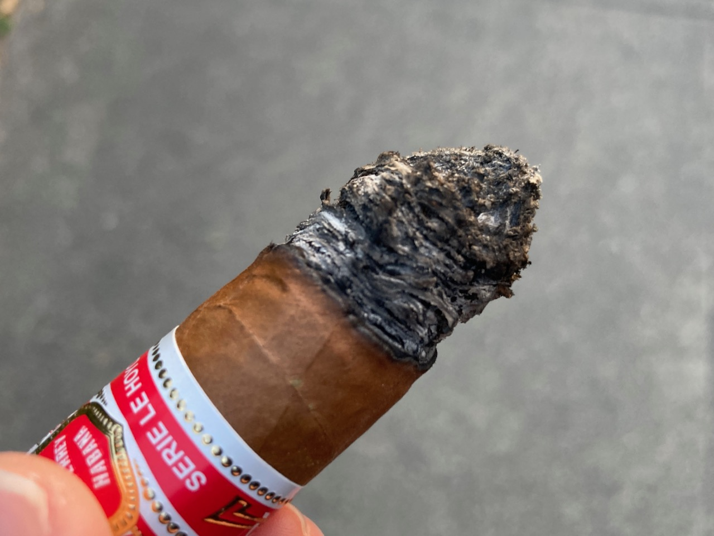
I really should've picked a better place to take the walk and enjoy this cigar. I drove around to pick a quiet neighbourhood. After I got off the car and started walking around, I realized it was not quiet at all. I was in between an elementary and a high school.
The cigar band is beautiful. It might actually also be because this cigar was too young and needed aging on this though. I did try my best to enjoy it since it was pricy, but I just couldn't because of the bad taste. I will probably have to go back and pick up another one to give a more proper judgement.
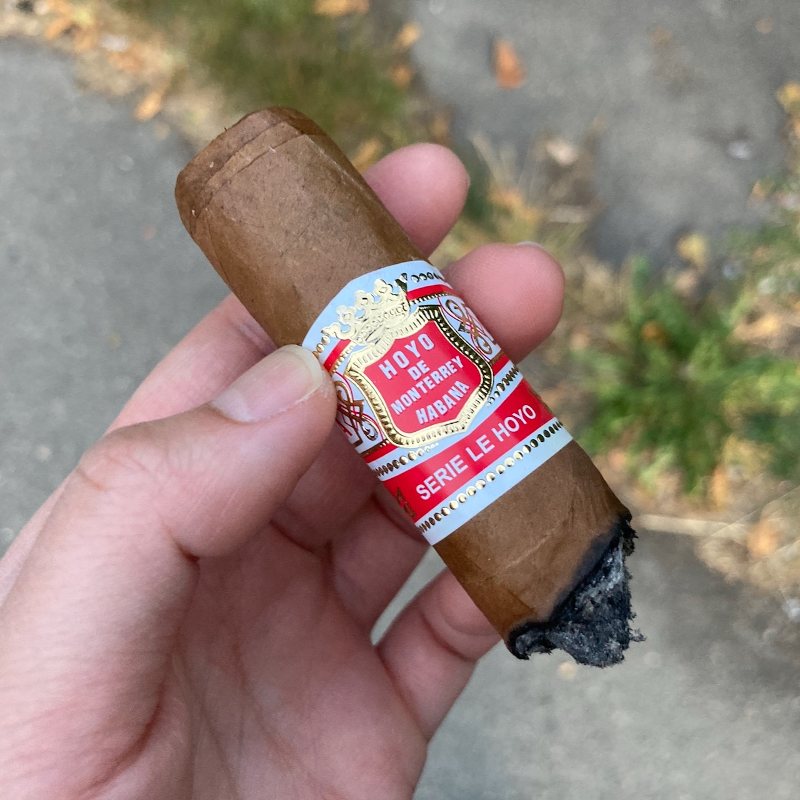 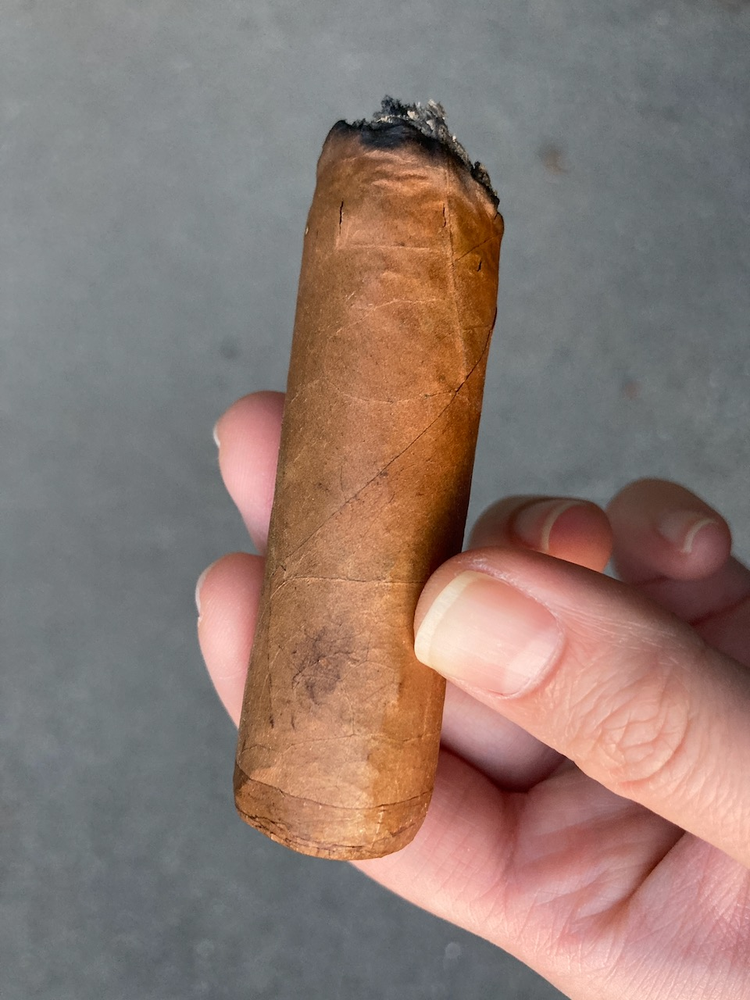 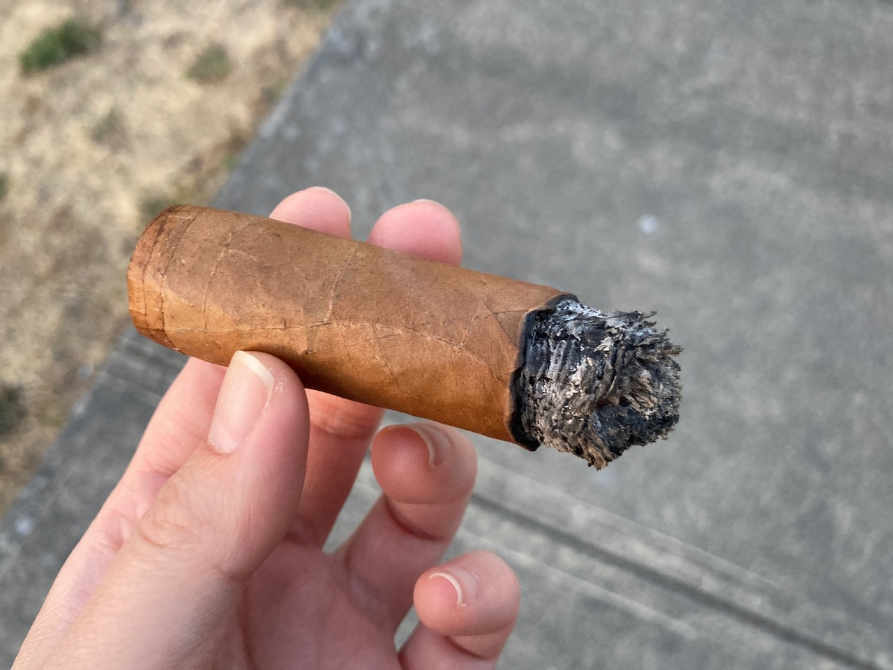
As usual, I ended this cigar quite a bit early since I couldn't taste anything good. The smoke time for this one was about 45-50min while being outdoor with relatively low wind. I did not enjoy it as much though because there were just too many kids running around. I just wanted some alone time with the smoke there.
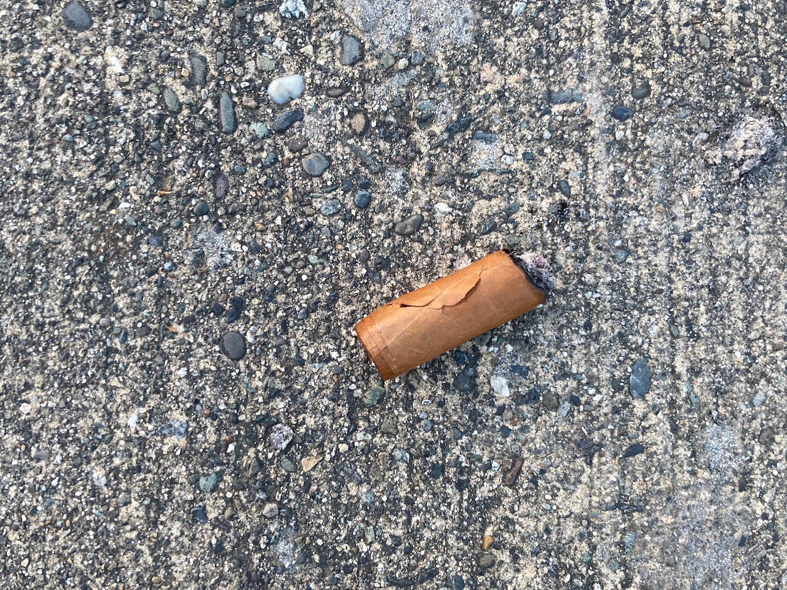 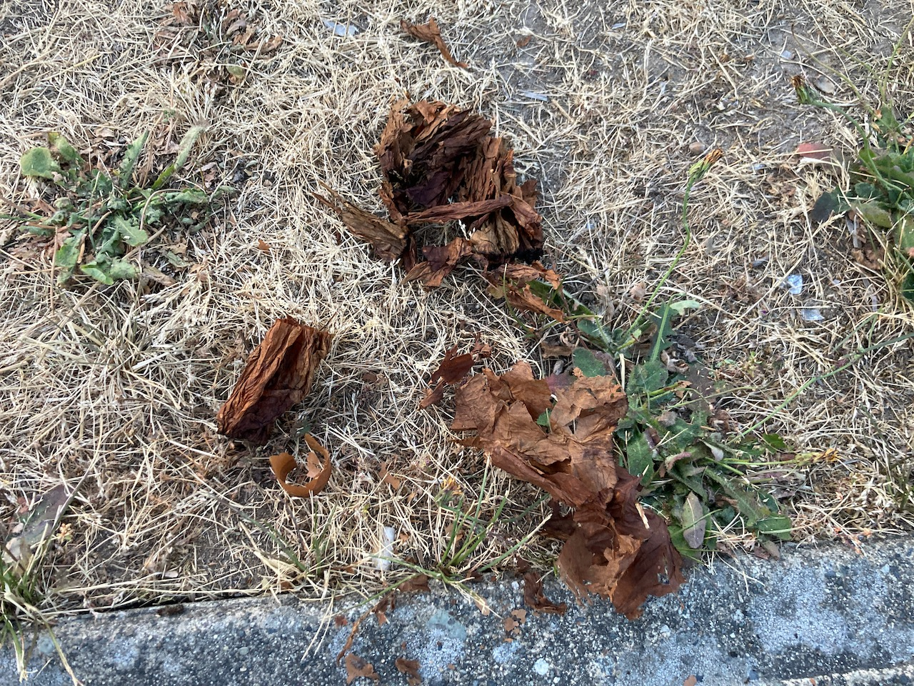 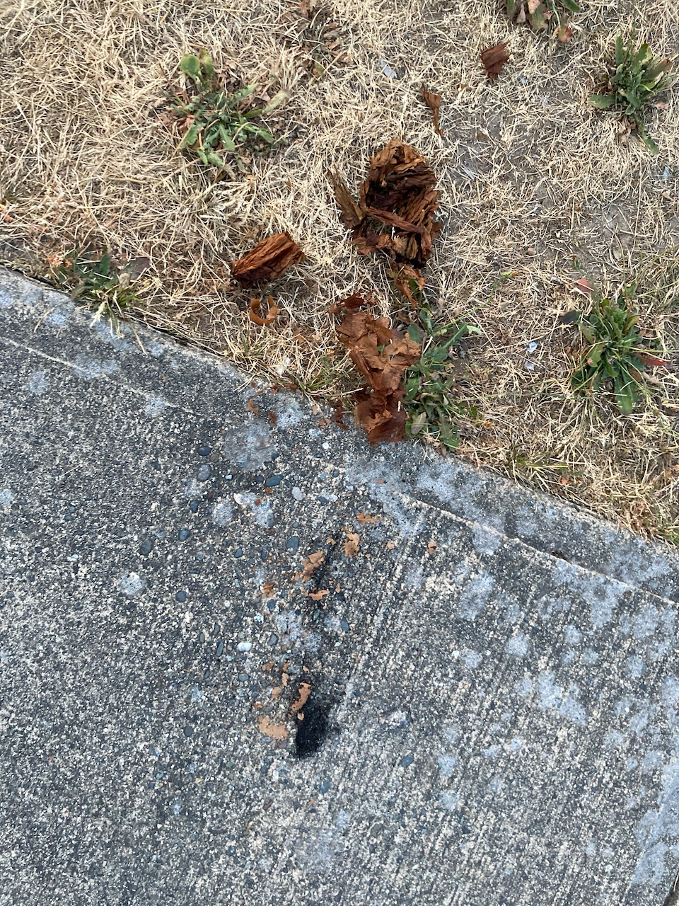
Anyways, that's my bad experience with this one. If you think I deserve a better cigar, please consider supporting this website so I can share more posts with you. Thank you and enjoy your day now! ❤